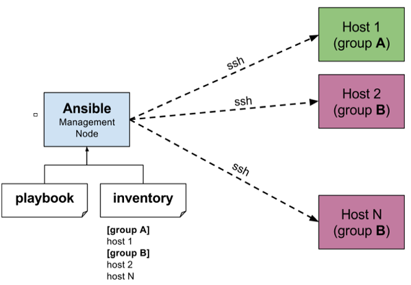

Иммутабельная инфраструктура!

Никитин Егор. Fora Soft
const { Map } = require('immutable');
const map1 = Map({ a: 1, b: 2, c: 3 });
const map2 = Map({ a: 1, b: 2, c: 3 });
map1.equals(map2); // true
map1 === map2; // false
Можем быть уверены в том что всё будет хорошо, что бы не случилось
#!/bin/bash
logged_on=$(who | grep -i -m 1 $1 | awk '{print $1}')
if [ -z $logged_on ]
then
echo "$1 is not logged on."
echo "Exit"
exit
fi
allowed=$(who -T | grep -i -m 1 $1 | awk '{print $2}')
if [ $allowed != "+" ]
then
echo "$1 does not allowing messaging."
echo "Exit"
exit
fi
while [[ $# -gt 1 ]]; do
arg="$1"
case $arg in
--bam)
bam=$2
shift
;;
--reg)
reg=$2
shift
;;
--out)
out=$2
shift
;;
--help)
helpmenu
;;
*)
shift
;;
esac
shift
done
CMS!
Content Configuration Management Systems
| Puppet 3.0 |
Chef 11.4 |
Ansible 1.3 |
Salt 0.17 |
|
| За |
|
|
|
|
| Против |
|
|
|
|
| Цены |
Бесплатная версия с открытым исходным текстом; Puppet Enterprise
стоит $100 за компьютер в год |
Бесплатная версия с открытым исходным кодом; Enterprise Chef
бесплатен для 5 компьютеров, $120 в месяц для 20 компьютеров, $300
в месяц для 50 компьютеров, $600 в месяц для 100 и так далее |
Бесплатная версия с открытым исходным кодом; AWX бесплатен для 10
компьютеров, далее $100 или $250 за компьютер в год, в зависимости
от поддержки |
Бесплатная версия с открытым исходным кодом; SaltStack Enterprise
стоит $150 за узел в год, со скидками в зависмости от количества и
корпоративными лицензиями |
Не, не гит:)
Но очень похоже
Наши клиенты сами получают данные от мастер ноды
CMS в которых это реализовано - CFEngine, Puppet. Поддерживают - Salt Stack, Chef
Мы сами/наша мастер нода говорит клиентам что и как делать
CMS в которых это реализовано - Ansible. Поддерживают - Salt Stack, Chef
Ansible!
Пример ansible конфигурации
- hosts: all
become: yes
tasks:
- name: Install required system packages
apt: name={{ item }} state=latest update_cache=yes
loop: ['apt-transport-https', 'ca-certificates', 'curl']
- name: Add Docker GPG apt Key
apt_key:
url: https://download.docker.com/linux/ubuntu/gpg
state: present
- name: Add Docker Repository
apt_repository:
repo: deb https://download.docker.com/linux/ubuntu bionic stable
state: present
- name: Update apt and install docker-ce
apt: update_cache=yes name=docker-ce state=latest
- name: Setting every day docker prune
cron:
name: Docker prune
hour: 0
minute: 0
job: docker system prune -a -f
- name: Setup docker logs rotation
copy:
src: ./docker/daemon.json
dest: /etc/docker/daemon.json
- name: Install pip deps
pip: "name={{ item }}"
loop: ['requests', 'docker']
- name: Add gitlab runner
docker_container:
image: gitlab/gitlab-runner:latest
name: gitlab-runner
volumes:
- /srv/gitlab-runner/config:/etc/gitlab-runner
- /var/run/docker.sock:/var/run/docker.sock
Мы умеем настраивать машины, настраивать много машин, настраивать автоматически
Но нам нужно их как-то запустить..
Детище HashiCorp
Огромное количество провайдеров
Множество фишек которые вы можете использовать для написания удобночитаемых и поддерживаемых конфигураций
Свой, очень приятный DSL который используется почти во всех продуктах HashiCorp
Мы всё ближе и ближе к нашей конечной цели
Теперь файлы конфигураций мы можем хранить в Git-репозитории
Таким образом мы достигаем воспроизводимости
Можем восстановить нашу инфраструктуру на любой момент времени
Этого достаточно для настройки простых секьюрити групп
resource "aws_default_vpc" "default" {
tags = {
Name = "Default VPC"
}
}
resource "aws_security_group" "allow_ssh_and_app" {
name = "allow_ssh_and_app"
description = "Allow ssh and app trafic"
vpc_id = aws_default_vpc.default.id
ingress {
description = "TLS from VPC"
from_port = 3002
to_port = 3002
protocol = "tcp"
cidr_blocks = ["0.0.0.0/0"]
}
ingress {
description = "TLS from VPC"
from_port = 22
to_port = 22
protocol = "tcp"
cidr_blocks = ["0.0.0.0/0"]
}
egress {
from_port = 0
to_port = 0
protocol = "-1"
cidr_blocks = ["0.0.0.0/0"]
}
tags = {
Name = "allow_ssh_and_app"
}
}
А этого для запуска спотовых инстансев
resource "aws_spot_instance_request" "worker_instance" {
ami = var.ami
instance_type = "c5.xlarge"
wait_for_fulfillment = true
vpc_security_group_ids=[var.security_group]
tags = {
Name = "Load Test Worker ${var.index}"
}
}
И опять HashiCorp...
Собираем "бессмертные" образы для наших машин
Наиболее простой из всех перечисленных ранее инструментов
Пример конфигурации
{
"variables": {
"aws_access_key": "{{ env `AWS_ACCESS_KEY` }}",
"aws_secret_key": "{{ env `AWS_SECRET_KEY` }}",
"loki_endpoint": "{{ env `LOKI_ENDPOINT` }}",
"loki_username": "{{env `LOKI_USERNAME`}}",
"loki_password": "{{env `LOKI_PASSWORD`}}",
"environment": "{{env `ENVIRONMENT`}}"
},
"builders": [{
"type": "amazon-ebs",
"access_key": "{{user `aws_access_key`}}",
"secret_key": "{{user `aws_secret_key`}}",
"region": "us-east-1",
"source_ami_filter": {
"filters": {"image-id": "ami-04064d2593eb9eb93"},
"owners": ["self"],
"most_recent": true},
"instance_type": "c5.large",
"ssh_username": "ubuntu",
"ami_name": "packer {{timestamp}}"}],
"provisioners": [{
"type": "ansible",
"user": "ubuntu",
"playbook_file": "./playbook.yml",
"ansible_env_vars": [
"LOKI_ENDPOINT={{ user `loki_endpoint` }}",
"LOKI_USERNAME={{ user `loki_username`}}",
"LOKI_PASSWORD={{ user `loki_password` }}",
"ENVIRONMENT={{ user `environment` }}"
]}]}
Описываем желаемое состоние машины/нескольких машин с помощью ansible
Делаем snapshot машины с желаемым состоянием с помощью packer
Поднимаем нашу инфраструктуру с нужным состоянием в помощью terraform
Profit!
Поднимаем инфраструктуру в облаке
Управляем серверами централизовано
Имеем типовое и предсказуемое поведение машин
Конфигурируем виртуальные машины для ботов
Разворачиваем машины с помощью terraform
Проводим нагрузочное тестирование
Убиваем машины после проведения тестов